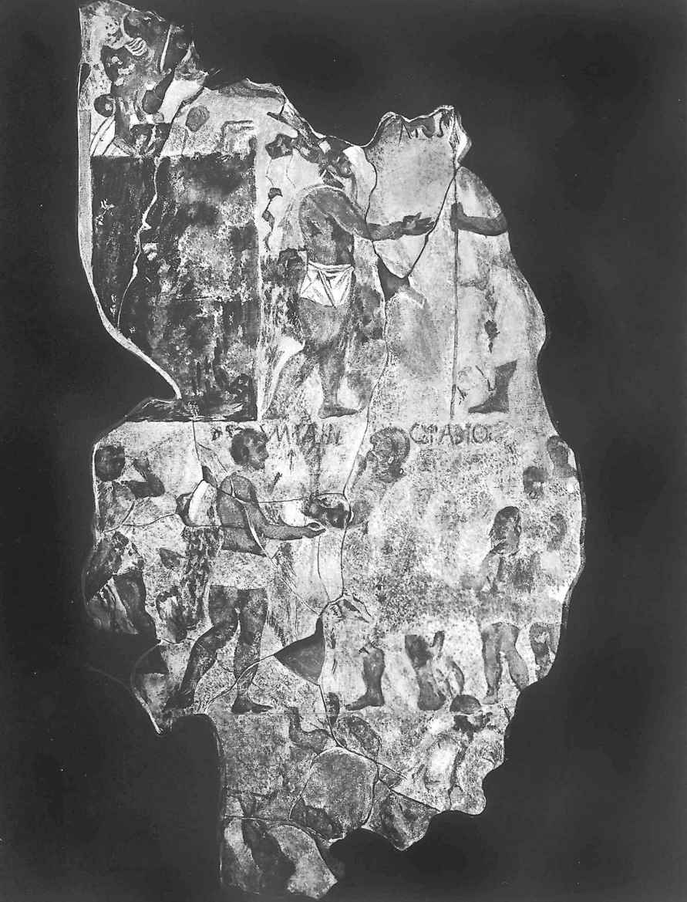
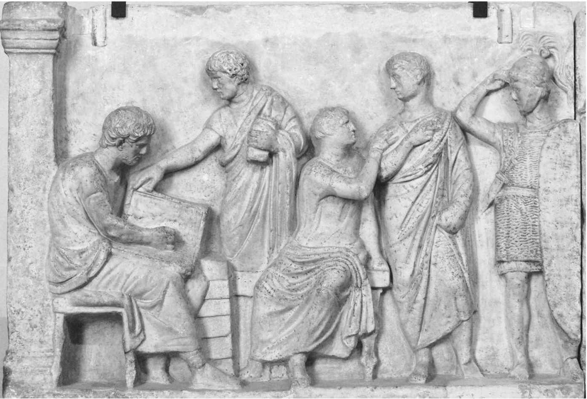

罗马共和国并不是一夜之间产生的。塔克文·苏佩布在公元前510年被逐仅仅标志着罗马在风雨飘摇的漫漫征程中迈向伟大的第一步，此后的数个世纪充满了内忧外患。在这种严酷的考验下，共和国被锻造出来，罗马逐渐征服了意大利地区并向更远处扩张。独具特色的罗马共和国政治和社会结构开始形成，并孕育出在古代世界前所未见的一种力量。
虽说我们对罗马共和国成长阶段的了解要胜过传说中的王政时代，但还远谈不上多么深入。从王政衰落到罗马确立对意大利中南部控制权的皮洛士战争（公元前280—前275），这中间相隔200多年。李维的《建城以来史》对于几乎连绵不绝的战争和内部冲突的记载令人困惑，而那些更早的记录却在高卢兵团于公元前387年左右攻陷罗马城时就遗失了。不过，重要叙事还算清晰。从公元前510年到前275年，罗马在意大利半岛的支配地位建立起来。罗马人的统治将意大利众多民族联合起来，从北部的伊特鲁里亚人到南部的希腊诸城邦。这些民族在罗马的领导下形成一个持续向外扩张的联盟，对罗马的成功起到了至关重要的作用。对外扩张和罗马内部的成长也紧密结合在一起。同一时期，伴随着一系列危机，罗马社会和政治开始转型。传统上这些危机被称为“阶层斗争”。到公元前3世纪早期，斗争在元老院和罗马人民（senatus populusque Romanus ，简称SPQR ）集体领导制为特征的政治构架中得到解决，而正是这种结构定义了罗马共和国。
早在伊特鲁里亚国王统治时代，罗马人就已开始向周围的拉丁民族施加统治力。推翻君主政制激起了对正在形成中的共和国的抵抗。遭到驱逐的塔克文家族加入了由周边城市联合体组成的拉丁同盟军队。公元前5世纪初，可能是在公元前499年或前496年，罗马人在图斯库伦附近的雷吉鲁斯湖畔遭遇拉丁军队。战斗十分激烈，根据传说，罗马人在狄俄斯库里神（即卡斯托尔和波吕克斯，特洛伊公主海伦的两个孪生兄弟）的帮助下最终获胜。据说正是这两位神化身年轻的骑士，让罗马军队重整旗鼓。战争的胜利最终让罗马的军事实力跃居其毗邻的民族之上，为拉丁姆平原的统一打下基础。
在雷吉鲁斯湖畔战役之后的两个多世纪里，罗马人和拉丁人打造的同盟网络是在崛起途中迈出的关键一步。对罗马的同盟国来说，每个拉丁城市不必缴纳贡品，却需要提供一定数量的士兵，在罗马将军的带领下于罗马军中服役。拉丁人有资格公平地分享战争中获得的任何战利品，同时当外敌进犯时也会得到罗马的保护。此外，拉丁同盟城邦更紧密地和罗马社会融合在一起。罗马人和拉丁人之间可以签订有效经济协议，其在法律上对双方均具约束力。双方可以通婚，孩子是婚姻的合法产物。
以古代社会的标准衡量，很难说罗马—拉丁同盟多么具有革命性。同一时期的古希腊正处在个体城邦的统治下。这些城邦极具独立性，同时又彼此嫉妒对方所享有的权利。从这方面看，罗马共和国和拉丁同盟间的关系有着非同寻常的复杂性。在罗马的带领下，拉丁人的人口规模和军事力量迅速增长，这也使罗马突破了城邦国家的局限，而这一点正是像雅典和斯巴达这类城邦从未做到过的。罗马给予拉丁同盟的特权非常具有吸引力，所以它的强大建立在齐心协力而非暴力镇压的基础之上。在随后的几个世纪里，虽然面临着扩张和汉尼拔入侵意大利带来的压力，拉丁同盟的大部分成员依然做到了对罗马保持忠诚。但是，因为罗马并不向同盟者索取财力上的支持，因此只有在战争阶段，拉丁同盟成员被征召入伍之时，罗马的优势才清楚地体现出来。罗马人需要维护这种优越性，同时也需要履行保护拉丁同盟的义务，这进而促使罗马在整个共和国时期保持其侵略性。
即便有拉丁同盟的协助，在初期阶段，罗马共和国仍难以将统治力施加到拉丁姆之外的其他地区。经过一个世纪的斗争，罗马才逐渐在意大利中部站稳脚跟。然而，灾难接踵而至。公元前390年（据传统记载），更可能在前387年，来自北部的一批高卢入侵者席卷而下。这支部队首先越过伊特鲁里亚，在打败了一支罗马军队后，逼近罗马城。罗马最后一批守军守住了卡匹托尔山，但城池落入敌军之手。此后，直到公元410年阿拉里克率领的哥特人攻入基督教化的罗马为止，这座城市八个世纪以来始终未被外敌攻破。
高卢人攻陷罗马成为罗马早期历史上最著名的片段之一，和这场灾难有关的故事逐渐变为传说。据李维记载，当高卢人侵入罗马城时，罗马元老坐在家中，如雕像一般镇定自若。直到一个好奇的高卢人触摸了一名罗马贵族的胡须，后者摸起一个象牙制品砸到了这个野蛮人头上，元老们就地遭到屠杀。若非朱诺女神的圣鹅鸣起警报，卡匹托尔山上的堡垒在某天夜里就被攻陷了。元老院甚至讨论了放弃罗马城的可能性，直到据说附近的一个高卢百人队队长告诉他的手下“我们也应就此收手”，此话被当作神谕传至罗马。
事实上，几乎可以肯定地说，罗马遭劫一事被夸大了。这场灾难毫无疑问引发的是一场心理效应，这体现在直到300多年后，在凯撒发动的高卢战争中，罗马对高卢人的恨意依然十分明显。但考古证据表明罗马城因高卢人入侵而遭到破坏的痕迹很少。另外，此次劫难似乎并未使罗马的实力受损。罗马共和国迅速复苏，并在塞尔维乌斯城墙（这座城墙的修建后来被记在罗马倒数第二位国王，塞尔维乌斯·图利乌斯的名下）的防护下阻止了之后入侵者对罗马城的再次进犯。在公元前4世纪剩余的时间里，罗马继续向外扩张，尤其是把矛头对准了意大利南部地区。正是在此时，罗马遇到了他们在意大利最强的敌手—萨莫奈人。
萨莫奈人是活跃于亚平宁山脊地带的一个强悍的山地民族。公元前5世纪他们就已迁徙到坎帕尼亚平原，并攻占了伊特鲁里亚人建立的城市卡普阿。罗马人向南部的坎帕尼亚进军加剧了双方的冲突，并引发了三次萨莫奈战争。第一次萨莫奈战争（公元前343—前341）虽不过是一次小规模的战斗，却产生了严重的后果。在公元前338年，卡普阿和罗马之间签订协约，这标志着罗马人的同盟网络已蔓延至拉丁姆以外地区。他们从罗马得到的权利和罗马赋予拉丁人的权利略有不同。卡普阿和其他意大利同盟者同样都需向罗马提供士兵以换取保护并分享战利品。另外，他们还要向罗马缴纳一份年贡，其享有的民事特权也比拉丁人要少。和意大利同盟者之间的关系进一步增强了罗马的资源储备和军事实力，尽管同时给意大利人施加的限制也造成了双方关系的紧张，这最终在共和国最后一个世纪里引发了战争。

图2 描绘罗马将军法比乌斯会见萨莫奈人头领凡尼乌斯的埃斯奎林历史残片
罗马和萨莫奈人的竞争在第二次萨莫奈战争中（公元前327—前304）达到白热化。公元前321年，罗马的出击致使他们在卡夫丁峡谷遭到一次耻辱性的失败。落败的罗马士兵被迫从象征屈服的牛轭下钻过。然而，失败只能让罗马人变得更加坚韧。罗马成功的奥秘不仅在于其强大的军事实力，或许更是由于罗马人对自身命运的坚定信念和拒绝放弃的精神。正如将来反复上演的那样，罗马再一次重整旗鼓，回到原地，期待复仇。萨莫奈人无法单枪匹马对抗罗马，于是他们联合了高卢人、伊特鲁里亚人以及其他意大利民族，为阻止罗马霸权的扩张而做出最后一次尝试。在公元前295年的森提乌姆一役中，罗马及其同盟者完胜萨莫奈联军。此次战役确立了罗马共和国作为意大利半岛头号霸主的地位。
在征服意大利的过程中，罗马面临的最后一个敌人带来了前所未有的挑战。向南意大利的扩张让罗马人进一步接触到了“大希腊”地区的希腊城市。其中某些城市欢迎罗马的到来，但随着与罗马之间紧张局势的升级，塔兰托城将目光转向东部地区，期待能从中获得援助将罗马人赶走。塔兰托人的呼吁在公元前280年得到了伊庇鲁斯国王（今阿尔巴尼亚）皮洛士的回应。皮洛士是亚历山大大帝在公元前323年死后，为数不多的几个统治着分裂的东地中海希腊语区的国王之一。皮洛士既野心勃勃，又具有丰富的战斗经验。他率领着一支由20000名步兵、3000名骑兵，以及约20头大象组成的强大军队来到意大利。这阵仗是罗马人此前从未见过的。
皮洛士指挥的职业军队比罗马以往所经历的任何对手都要强大。在头两次战役中，也就是公元前280年的赫拉克利亚之战及次年的阿斯库鲁姆之战，罗马均遭遇惨败。但这两场胜利也让皮洛士付出了高昂的代价。尤其是阿斯库鲁姆战役令皮洛士的精装步兵伤亡惨重，以至于他沮丧地评论道：“如果对罗马人再来一次这样的胜利，我们将被彻底击垮。”最终，罗马顽强的抵抗迫使皮洛士退往西西里。他在公元前275年再次登陆意大利，并最终被罗马人击败于贝内文托。皮洛士放弃了意大利（后来，当他在进攻希腊阿尔戈斯城时，被一名老妪扔来的屋瓦击中头部身亡），塔兰托投降。到公元前270年，整个大希腊地区都被纳入罗马人的同盟网络。罗马毫无争议地成了意大利的霸主。
在征服意大利途中，罗马共和国的社会和政治结构不断完善。在王制衰落后，罗马的贵族统治集团最初仅由一定数量的大家族构成，合起来被称为“贵族”（patres ，“父老们”）。只有贵族家族—比如克洛狄家族、尤利家族和科尔涅利家族—出身的成员才有资格担任宗教或政治领域内的职务。世袭贵族以外的所有罗马公民都是“平民”。因此，尽管平民中包含了那些最贫穷的公民，但不能将平民简单地看作“穷人”从而将之和贵族出身的“富人”对立起来。一些富裕的平民拥有和贵族一样多的土地，但由于他们并非来自贵族家族，因此不能担任公职。贵族和平民之间的矛盾变得不可避免。双方最早的纷争来自贵族对平民的剥削。随着时间的推移，相对富裕的平民成员便动员广泛的平民群体，希望从中寻求支持以获取平等的政治权力。平民派争取社会和政治权利的漫长斗争被称为“阶层斗争”。
如果史料中的编年无误的话，那么“阶层斗争”开始于共和国建立后的头20年。在公元前494年，反对的声音出现了，起因是不满贵族对陷入债务危机的平民采取的举措。较为贫困的平民为共和国军队提供了大量兵员，而与此同时在军中他们又在为维持生计的来源，即一块田地而挣扎。许多人转向贵族寻求支援，这却让他们受到虐待，甚至沦为债主的奴隶。随着贵族控制了罗马政坛，平民们在现存体制下愈加感到无助。他们的解决办法是举行罢工。公元前494年，当军队受命出征之时，平民们却聚集在罗马城外拒绝行动，直到贵族做出一定的表态。这就是所谓的“第一次平民撤离运动”。贵族被迫让步，他们给予平民参加其自行组织的公民大会，即平民议事会（Concilium Plebis ）的权利。与此同时，平民可以选举自己的官员—平民保民官，来保护自身权利不受侵犯。
阶层斗争的第二个爆发点源自贵族对法律的控制。早期罗马没有成文法典，司法问题取决于习俗性质的非成文法，裁决权掌握在贵族手中。比如，即便有保民官的保护，债务奴隶制同样让平民很容易受到贵族的欺凌。约公元前450年，对专制性贵族司法体系的抗争使得《十二铜表法》出炉。这是罗马历史上的第一部成文法典。此后，平民至少可以了解这部法律，他们的地位也逐渐得以巩固。到公元前4世纪末期，罗马公民因债务而沦为奴隶的制度被废除。与此同时，所有公民都拥有了向罗马人民上诉来反抗罗马官员之决定的权利。这一抗争的顶点是公元前287年《霍腾西阿法》的出台。根据此法，在平民议事会中通过的法案对包括贵族在内的所有罗马人民都具有约束力。
在阶层斗争过程中，罗马人民有了一定的保障。同时，在某种程度上也可以参与到国家事务中来。然而，平民阶层中那些较为富裕的成员并不满足于此。他们要求在政治上扮演更重要的角色，向贵族垄断权力提出挑战。贵族再一次被迫做出让步。在历经一个多世纪的持续冲突后，公元前367年通过的法律允许平民参与执政官的竞选，次年就产生了第一位平民出身的执政官。从公元前342年以后，每年度选出的两名执政官中，按要求必须有一个是平民。最终，罗马政治和宗教方面的重要官职几乎全部向平民开放。由出身决定的贵族和平民间的界限依然存在，但罗马共和国的统治阶级却扩大了。一个全新的贵族阶层产生了，它既包括原来的贵族群体，也有来自平民阶层的显贵。到公元前3世纪早期，这个合二为一的新贵族群体已牢固确立起来。罗马共和国独特的政治架构中的三个关键要素也在这一时期成形，分别是：官员、元老院和人民大会。
官员每年从这一新贵阶层被选出以负责政府日常事务的运转。位居首席的官员是两名执政官，他们拥有最高治权（imp erium ）—这是罗马国王曾经拥有的权力。在任期间，执政官是国家行政和军事上的首脑。他们主持元老院，根据需求提出法律议案，同时在战场上指挥军队。获得执政官席位通常象征一个罗马贵族在仕途上的顶峰。罗马历法就是按照当年担任这一最高官职的人的名字来纪年的。对独裁制度的痛恨导致塔克文·苏佩布被逐，这一仇恨至此仍未消除。两名执政官当选可以阻止其中一人掌握过多权力，而执政官职位的任期只有一年。
位于执政官职位之下的是较次级别的官员，也是每年选举更换。主要的官职是法务官、营造官、财务官和平民保民官。法务官是除执政官外唯一握有最高治权的官员，也就是拥有统帅军队和主持元老院会议的权力。法务官的权力次于执政官，其主要职责集中在民事以及后来的行省司法领域。在法务官之下是营造官，他们主要负责罗马市政维护，体现在道路、供水、食物以及竞赛等方面。位次最低的官员是财务官，主要负责财政和法律方面的事务。随着国力增强导致罗马政府负担的加重，位于执政官以下的三个官职的具体数量和职责也不断增加。
保民官在某种程度上不同于其他官员。保民官职位产生于公元前494年第一次平民撤离运动后，最初它是对富裕平民阶层开放的唯一的官职。每年有10名保民官当选，其主要职能是保护平民利益不受贵族官员不当行为的侵犯。出于这一原因，保民官拥有较广泛的权力，包括有权为被政府官员逮捕的公民提供支持，宣布另一名官员的行为无效，以及在平民议事会提出立法议案等。理论上，保民官的人身是神圣不可侵犯的，尽管这并不能对那些试图利用该职务提出激进政策的人加以保护。这方面最有名的例子是公元前2世纪的格拉古兄弟。
另外一个稍不寻常的官职是监察官。关于这一职位，大约每五年进行一次选举，每次选出两名监察官。但在卸任前他们必须完成其所承担的任务（最长不得超过18个月）。其主要职责是校订公民名单，并对公民财产和道德做出评估。这其中包括对元老院进行重新审定，如为元老院招募新成员，同时从元老院名单中剔除那些行为不端者。因此，监察官是一个极富声望的官职，因此几乎总是由前执政官出任。罗马共和国时期最著名的监察官是老加图（也被叫作监察官加图），他在公元前184年上任。加图坚定地认为，同祖先们相比，在他所处的时代罗马公民持有的道德标准已经退化了。作为监察官，他将那些对罗马传统嗤之以鼻的人逐出元老院。他还曾严厉斥责在白天当着女儿的面和妻子拥抱的某名元老。
以上这些官职共同组成了所谓的“荣誉阶梯”（cursus honorum ）。这是一名优秀的罗马贵族需要担任的一个官职序列。根据传统仕途标准，一个人首次担任公职也就是财务官的最低年龄是28岁左右。然后，他可能会成为一名营造官或一名平民保民官。在这之后，他才能谋求法务官的职位。那些已经积累了足够声望的人或许会首先竞选执政官席位，此后再担任监察官。每一职位之间的空窗期通常是两年。在公元前1世纪，对那些重要官职规定了就职者的最低年龄标准，法务官是39岁，执政官则是42岁。但这些规定未必总能得到严格执行。精英群体之间对官位的竞争十分激烈，而某些个人又不断对现状做出挑战。然而，只有在共和国最后一个世纪中，握有充分权力的个人才出现，他们控制了那些最高职位，进而对共和国制度的根基造成威胁。

图3 公元前1世纪早期的“多米提乌斯—阿赫诺巴尔布斯祭坛”（实际是一个塑像底座）上呈现的人口普查场景
罗马共和国时期的所有官职都存在一定的关键共性，体现在罗马人希望对个人权力加以约束。官位需要通过竞选获得，且任期有限，还需要和一个或多个同僚共同分享治权。当然，以上规则也有例外之处。根据情况需要，一名执政官或法务官在其一年任期的最后可以延长他们手中的最高治权，此后成为前执政官和前法务官，尽管这种延长权力的做法直到公元前1世纪才变得较为普遍。另一个较不寻常的例外是独裁官职位。尽管敌视专制制度，当处在某些形势下，国家需要一名单独的领导者时，罗马对此也是认可的。在紧急状况下，一名独裁者被授予超级治权来监管国家。他的任期只有6个月或仅限于危急期内，不管是哪一种情况，期限都更短。共和国后期，尤利乌斯·凯撒持有的“终身独裁官”职位在罗马人看来无疑是有悖于这一传统的，这也成了他被刺身亡的一个主要原因。
官员是罗马共和国宪政制度的执行者，负责处理政府的日常事务，担当政治和军事领导人的角色。但在共和国早期，真正的权力并不掌握在某些官员手中，而在权力集体化的元老院。自成年后的一生中，一名罗马贵族的政治生涯很短暂，需要进行年度选举的传统也让他们在任期间积累的经验有限。这在某些时候暴露了共和国体制的弱点，尤其是执政官衔的将领面对诸如皮洛士和汉尼拔这样的职业军人的时候。因此，官员需要遵循元老院的指导，后者早在王政时代就已成为给国王提供建议的贵族议事机构。一名官员本身就是元老院的一分子。卸职后，他又成了一名普通的元老。重大决定总是先在元老院进行辩论，尤其是有关对外政策、市政管理以及财政方面的事务必须置于元老院的监管之下。所以，元老院才是共和国政府的真正基石。
决策由元老院提出，但还要经过共和国体制中的第三个要素即公民大会的确认后方可实施。公民大会负责法律的批准及所有官员的年度选举。罗马有几个不同形式的公民大会，但共和国时期最为重要的两个分别是百人大会（Comitia Centuriata ）和平民议事会。百人大会选举产生执政官、法务官以及负责对外宣战。平民议事会选举产生平民保民官，并负责通过由保民官提出的平民决议。尽管这些公民大会在理论上是罗马最高权力机构，但现实中依然要服从元老院指导。召集大会的官员只将那些已在元老院讨论过的议案拿到公民大会上去表决，而公民大会也几乎总会批准元老院的决定。这一复杂的体制既认可每名公民在政府事务上的发言权，而在实践中又将一切控制在贵族群体手中。罗马共和国由元老院和罗马人民进行统治，非常符合这一次序。
共和国宪政制度是罗马人民的独特创造。在一定程度上，罗马人民拥有最高权力，但罗马又不是一个民主国家，面对来自人民的各种刁难，它要比古典时代的雅典强大得多。统治罗马的古老氏族门第以及平民新贵有清晰的界定，但同时也会接纳新鲜血液。另外这种体制所拥有的现实灵活性又是同样军国主义化的斯巴达人所欠缺的。在任的官员拥有执政权，但年度选举造成的限制以及元老院的集体领导制又能阻止任一个体攫取独裁权力。罗马共和国是一个稳定、保守却又不失变通的政府形态，它是成就罗马伟大的平台。在富有竞争和尚武精神的元老院精英的驱使下，罗马在意大利建立了霸权，并最终成为广袤的地中海世界的霸主。这是共和国的胜利，但同时也造成了它的毁灭。因为通向帝国的征途中产生的巨大压力给共和国肌体带来了无法承受之重。